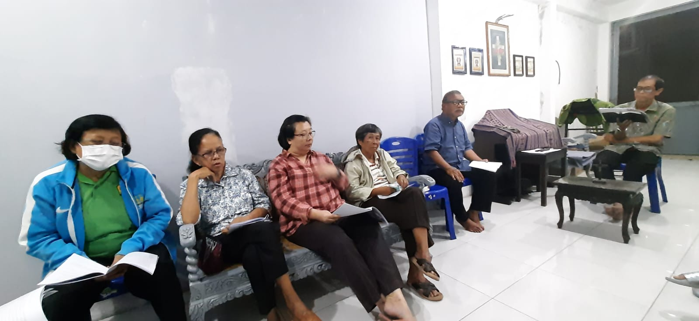
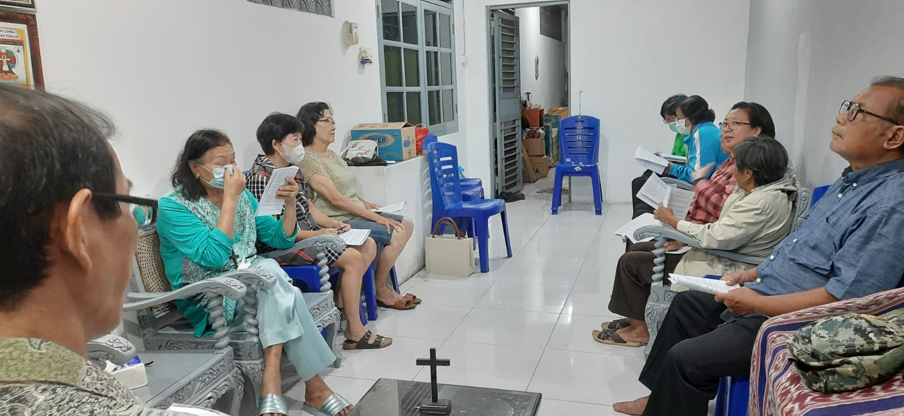
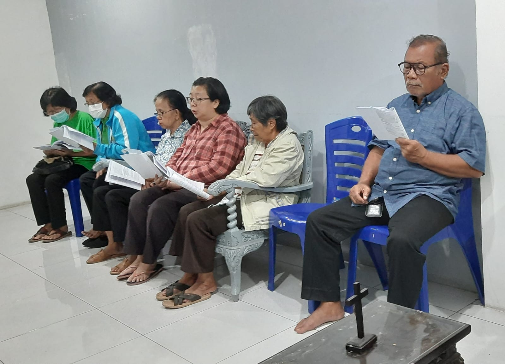
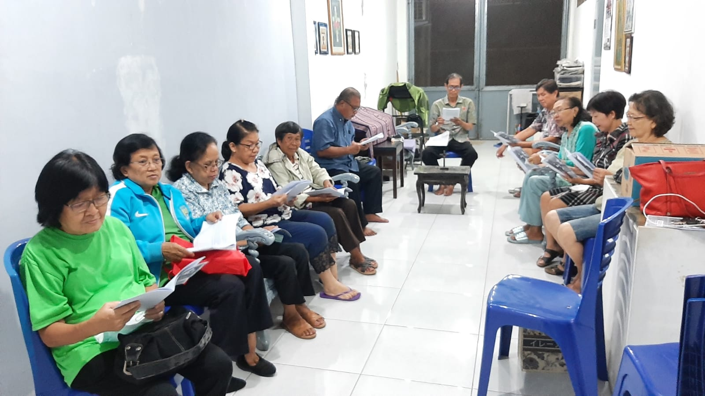

Pendalaman Iman APP ke 1
|  |  |
|  |  |
PERTEMUAN I MEWUJUDKAN PERTOBATAN SEJATI
Masa Prapaskah merupakan masa pertobatan yang mengajak kita dari pertobatan hati menuju gerak pertobatan praksis lahiriah baik yang dilaksanakan secara pribadi maupun bersama dalam keluarga, komunitas basis, lingkungan, paroki dan keuskupan.
Masa tobat ini mengajak kita untuk mewujudkan pertobatan sejati yang membawa kita untuk semakin lebih mangasihi sesama dan peduli pada seluruh ciptaaan. Melalui Aksi Puasa Pembangunan (APP) yang dilaksanakan, kita ingin mewujudkan pertobatan dengan lebih peduli dan solider terhadap bumi yang menderita dan sesama yang menderita.
Upaya kita membangun pertobatan dilaksanakan melalui tindakan bermatiraga dengan puasa dan pantang, bertekun dalam doa dan merenungkan Kitab Suci.
Pada Pasca pandemic Covid-19, pertobatan kita juga dibangun dengan semakin tekun mengikuti Ekaristi secara langsung, menyesali dosa dan menyambut sakramen Tobat, menghadiri pendalaman Iman APP dan semakin peduli pada jeritan bumi dan sesama yang menderita.
Inspirasi Kitab Suci: Yesaya 58:1-9a
58 : 1 Beginilah firman Tuhan Allah, Serukanlah kuat-kuat, janganlah tahan-tahan! Nyaringkanlah suaramu bagaikan sangkakala, beritahukanlah kepada umat-Ku pelanggaran mereka dan kepada kaum keturunan Yakub dosa mereka!
58 : 2 Memang setiap hari mereka mencari Aku dan suka untuk mengenal segala jalan-Ku. Seperti bangsa yang melakukan yang benar dan yang tidak meninggalkan hukum Allahnya mereka menanyakan Aku tentang hukum-hukum yang benar, mereka suka mendekat menghadap Allah, tanyanya:
58 : 3 “Mengapa kami berpuasa dan Engkau tidak memperhatikannya juga? Mengapa kami merendahkan diri dan Engkau tidak mengindahkannya juga?” Sesungguhnya, pada hari puasamu engkau masih tetap mengurus urusanmu, dan kamu mendesak-desak semua buruhmu.
58 : 4 Sesungguhnya, kamu berpuasa sambil berbantah dan berkelahi serta memukul dengan tinju dengan tidak semena-mena. Dengan caramu berpuasa seperti sekarang ini suaramu tidak akan didengar di tempat tinggi.
58 : 5 Sungguh-sungguh inikah berpuasa yang Kukehendaki, dan mengadakan hari merendahkan diri, jika engkau menundukkan kepala seperti gelagah dan membentangkan kain karung dan abu sebagai lapik tidur? Sungguh-sungguh itukah yang kausebutkan berpuasa, mengadakan hari yang berkenan pada TUHAN?
58 : 6 Bukan! Berpuasa yang Kukehendaki, ialah supaya engkau membuka belenggu-belenggu kelaliman, dan melepaskan tali-tali kuk, supaya engkau memerdekakan orang yang teraniaya dan mematahkan setiap kuk,
58 : 7 supaya engkau memecah-mecah rotimu bagi orang yang lapar dan membawa ke rumahmu orang miskin yang tak punya rumah, dan apabila engkau melihat orang telanjang, supaya engkau memberi dia pakaian dan tidak menyembunyikan diri terhadap saudaramu sendiri!
58 : 8 Pada waktu itulah terangmu akan merekah seperti fajar dan lukamu akan pulih dengan segera; kebenaran menjadi barisan depanmu dan kemuliaan TUHAN barisan belakangmu.
58 : 9a Pada waktu itulah engkau akan memanggil dan TUHAN akan menjawab, engkau akan berteriak minta tolong dan Ia akan berkata: Ini Aku!
Pertanyaan Renungan/Sharing:
- Dari Sabda Allah yang kita dengar dari Kitab Yesaya tadi, manakah kata atau kalimat yang berkesan dan mengapa berkesan bagi Saudara?
- Bagaimana wujud puasa yang benar sebagai wujud pertobatan yang diajarkan nabi Yesaya
RENUNGAN / PENEGASAN
Butir-butir permenungan/penegasan:
Nabi Yesaya mengkritik praktek puasa dan peribadatan yang pada umumnya hanya sampai pada ritual tetapi tidak menggerakkan orang berbuat kesalehan sosial. Maka dikatakan bahwa puasa yang Kukehendaki ialah (bdk. ayat 6-7): Supaya engkau membuka belenggu-belenggu kelaliman, dan melepaskan tali-tali kuk, supaya engkau memerdekakan orang yang teraniaya dan mematahkan setiap kuk, supaya engkau memecah-mecah rotimu bagi orang yang lapar, dan membawa ke rumahmu orang miskin yang tak punya rumah, dan apabila engkau melihat orang telanjang, supaya engkau memberi dia pakaian dan tidak menyembunyikan diri terhadap terhadap saudaramu sendiri! Jika kesalehan sosial itu dilakukan maka akan membuahkan damai di hati. Mari kita melihat dan menyegarkan kembali pemahaman kita tentang pertobatan melalui pantang dan puasa dalam ajaran gereja; olah rohani, matiraga dan bersedekah; serta gerakan APP sebagai pertobatan pribadi dalam bentuk belarasa.
Membangun Pertobatan Melalui Pantang dan Puasa. Kitab Hukum Kanonik (KHK) Kanon 1249 mengajarkan kepada kita bahwa: “Semua orang beriman kristiani wajib menurut cara masing-masing melakukan tobat demi hukum ilahi; tetapi agar mereka semua bersatu dalam suatu pelaksanaan tobat bersama, ditentukan hari-hari tobat, dimana umat beriman kristiani secara khusus meluangkan waktu untuk doa, menjalankan karya kesalehan dan amal-kasih, menyangkal diri sendiri dengan melaksanakan kewajiban-kewajibannya secara lebih setia dan terutama dengan berpuasa dan berpantang, menurut norma kanon-kanon berikut.
a) Kan. 1250 - Hari dan waktu tobat dalam seluruh Gereja ialah setiap hari Jumat sepanjang tahun, dan juga masa prapaskah.
b) Kan. 1251 - Pantang makan daging atau makanan lain menurut ketentuan Konferensi para Uskup hendaknya dilakukan setiap hari Jumat sepanjang tahun, kecuali hari Jumat itu kebetulan jatuh pada salah satu hari yang terhitung hari raya; sedangkan pantang dan puasa hendaknya dilakukan pada hari Rabu Abu dan pada hari Jumat Agung, memperingati Sengsara dan Wafat Tuhan Kita Yesus Kristus.
c) Kan. 1252 - Peraturan pantang mengikat mereka yang telah berumur genap empat belas tahun; sedangkan peraturan puasa mengikat semua yang berusia dewasa sampai awal tahun ke enampuluh; namun para gembala jiwa dan orangtua hendaknya berusaha agar juga mereka, yang karena usianya masih kurang tidak terikat wajib puasa dan pantang, dibina ke arah cita-rasa tobat yang sejati
d) Kan. 1253 - Konferensi para Uskup dapat menentukan dengan lebih rinci pelaksanaan puasa dan pantang; dan juga dapat menggantikan seluruhnya atau sebagian wajib puasa dan pantang itu dengan bentuk-bentuk tobat lain, terutama dengan karya amal-kasih serta latihan-latihan rohani.
Membangun Pertobatan Melalui Olah Rohani. Selama masa Prapaskah, kita membangun pertobatan sejati dengan melaksanakan olah rohani, bermatiraga dan bersedekah. Olah rohani dilakukan dengan berdoa, mendengarkan Sabda Tuhan, mengikuti sarasehan prapaskah, mengikuti perayaan ekaristi dan lain-lain yang akan membuat kita semakin mudah bersyukur dan bergembira. Pada masa Prapaska Pasca pandemic Covid-19, pertobatan kita juga dibangun dengan semakin tekun mengikuti Ekaristi secara langsung, menyesali dosa dan menyambut sakramen Tobat, menghadiri pendalaman Iman APP dan semakin peduli pada jeritan bumi dan sesama yang menderita.
Mewujudkan Pertobatan dalam Belarasa melalui Gerakan Aksi Puasa Pembangunan (APP) Gerakan APP sebagai wujud belarasa sebagai hasil pertobatan sudah menjadi Gerakan Gereja Katolik Indonesia sejak tahun 1970-an. APP adalah aksi pertobatan setiap jiwa dalam bentuk olah rohani dan matiraga (pantang+puasa), kemudian matiraga diwujudnyatakan dalam tindakan amal kasih (bersedekah), berupa pengumpulan dana ke kotak APP setiap Pendalaman Iman APP 2023 Keuskupan Purwokerto 12 hari selama 40 hari. Tindakan amal kasih/derma/bersedekah adalah tindakan memberi (mempersembahkan sejumlah dana) melalui Kotak APP dari penghematan biaya makan atas pantang dan puasa yang kita lakukan. Tindakan ini tidak akan menambah anggaran sedikitpun, apabila kita melakukan pantang dan puasa sesuai jadwal dengan disiplin: artinya kita hanya mempersembahkan uang yang tidak kita belanjakan akibat kita sedang berpantang/berpuasa, lalu memasukkannya ke dalam Kotak APP. Dalam memberikan sedekah ini, setiap pribadi memiliki ukuran dan perhitungannya sendiri, namun setidaknya perhitungan tersebut memberikan gambaran bahwa kita bersedekah tanpa menambah anggaran. Sedekah sebagai hasil matiraga adalah wujud semangat belarasa kita yang melihat bahwa diluar sana banyak orang yang berkekurangan dan menjadi bentuk empati kita dengan menempatkan diri dalam kondisi mereka yang berkekurangan. Sedekah ini juga menjadi tindakan membangun rasa syukur dalam hidup harian kita. Sedekah yang dikumpulkan secara bersama-sama akan berjumlah luar biasa dan sangat berguna untuk membantu sesama kita yang berkekurangan.
Sharing Pengalaman dan Rencana Aksi
- Bagaimana praktek pantang dan puasa yang dilakukan oleh pribadi /keluarga kita masing-masing pada tahun lalu?
- Bagaimana niat saudara dalam membangun pertobatan sejati melalui olah rohani hidup saudara ?
- Bagaimana keluarga kita berkomitmen dalam sedekah/amal kasih setiap hari ke dalam Kotak APP sebagai wujud aksi pantang dan puasa untuk membantu sesama yang menderita dan berkekurangan?
- Aksi pantang dan puasa seperti apakah yang akan dilaksanaka keluarga dan komunitas basis/lingkungan untuk mengurangi kerusakan lingkungan? (contoh mengurangi sampah makanan, mengurangi penggunaan plastic/stereofoam dll)
Materi tulisan dari Buku Pendalaman APP 2023 yang disusun oleh Panitia APP Keuskupan Purwokerto